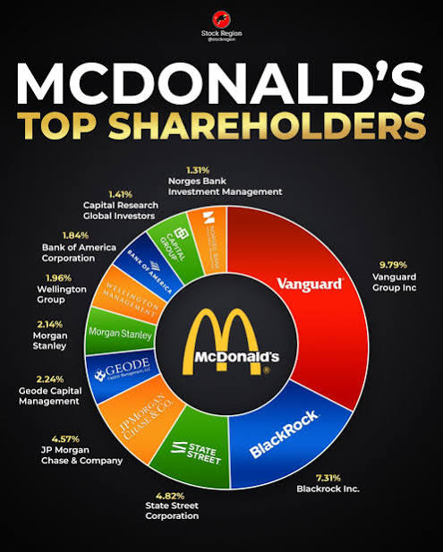
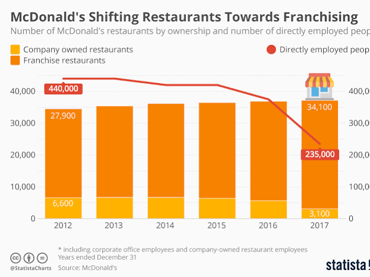
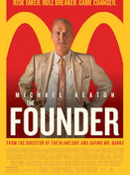
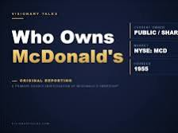
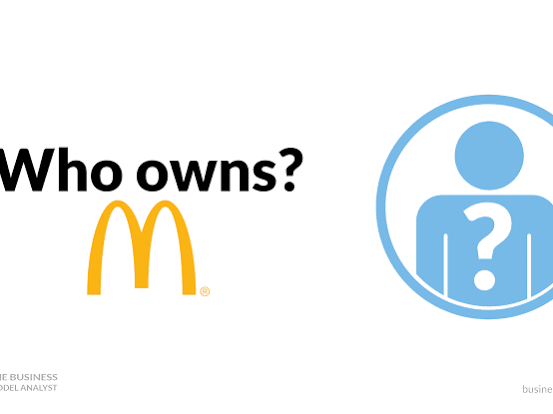
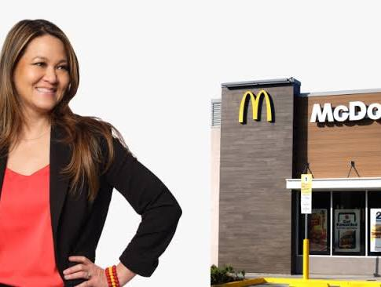

Conversation 872
McDonald's Ownership Details
Prompt 1 · You
mcdonalds ownership
Response 1 · Google AI Mode






McDonald's is a publicly traded corporation, meaning it is not owned by a single individual, but jointly by thousands of shareholders worldwide. The company is listed on the New York Stock Exchange under the ticker symbol NYSE: MCD.
Jagran Josh
The ownership structure of the empire is divided into two distinct levels: institutional corporate ownership and local restaurant operations.
Corporate Ownership (Top Shareholders)
The vast majority of McDonald's Corporation is owned by large institutional investment managers and index funds. Company executives and insiders own less than 1% of the total shares.
WallStreetZen +2
The top institutional shareholders include:
- The Vanguard Group: ~9.95% ownership
- State Street Global Advisors: ~4.88% ownership
- BlackRock Inc.: ~4.83% ownership TIKR.com
Restaurant-Level Ownership
While the corporate entity dictates the brand, menu, and core guidelines, it actually operates very few physical restaurants directly.
Tracenable +1
- Independent Franchisees: Approximately 95% of the 45,000+ global locations are independently owned and operated by local business owners. These franchisees pay royalties and rent back to the corporation. McDonald’s Corporation +4
- The Real Estate Twist: A unique facet of McDonald's ownership is its property portfolio. The McDonald's Corporation owns about 56% of the land and 80% of the buildings for its locations, making it one of the largest real estate owners in the world.
 YouTube·REtipster +2
YouTube·REtipster +2
Historical Origins
The chain was originally started as a single drive-in by brothers Richard and Maurice McDonald in 1940. However, businessman Ray Kroc joined as a franchising agent in 1955 and ultimately bought out the brothers entirely in 1961, forming the modern foundation of the corporate giant we know today.  Wikipedia +1
Wikipedia +1
Wikipedia +1Are you interested in learning about the financial requirements to buy a franchise, or would you like to know more about the current corporate executive leadership?
Source links preserved from this response
- NYSE: MCD
https://www.nyse.com/quote/XNYS:MCD - www.jagranjosh.com
https://www.jagranjosh.com/general-knowledge/who-is-the-owner-of-mcdonalds-know-the-history-and-current-status-1820008100-1 - www.wallstreetzen.com
https://www.wallstreetzen.com/stocks/us/nyse/mcd/ownership - BlackRock Inc.
https://www.blackrock.com/ - www.tikr.com
https://www.tikr.com/blog/who-owns-mcdonalds-top-shareholders-recent-insider-trading - tracenable.com
https://tracenable.com/company/mcdonalds/group-entities - corporate.mcdonalds.com
https://corporate.mcdonalds.com/corpmcd/franchising-overview.html - McDonald's Corporation
https://corporate.mcdonalds.com/ - www.youtube.com
https://www.youtube.com/shorts/EunnGQ_CXUw - en.wikipedia.org
https://en.wikipedia.org/wiki/McDonald's
Prompt 2 · You
who owns the m.c.=E^2scher museum Den Haag
Response 2 · Google AI Mode
The M.C. Escher Museum in Den Haag (Escher in Het Paleis) does not have a single private owner. Instead, its ownership and management are divided between the municipal government, a public museum foundation, and a major art institution:
DenHaag.com
- The Building (The Palace): The historic building, Paleis Lange Voorhout, is owned by the Municipality of The Hague (Gemeente Den Haag). The Dutch Royal Family sold the former winter palace to the city in 1990 under the strict legal condition that it must always be used for cultural activities. Geschiedenis Extra +2
- The Museum Management: The museum is run as a non-profit entity under the Stichting Escher Collectie (Escher Collection Foundation). It operates under the joint corporate umbrella of the Kunstmuseum Den Haag, meaning both museums share the same executive director and supervisory board. Museum Escher in Het Paleis +3
- The Art Collection: The original prints and masterpieces on display are owned by the Kunstmuseum Den Haag. The Kunstmuseum holds one of the largest public Escher collections in the world and permanently loans these works to the palace museum. Kunstmuseum Den Haag +1
Would you like to know more about the upcoming relocation of the Escher collection to a new building in Den Haag, or are you looking for details on the history of the royal palace itself?
Source links preserved from this response
- Escher in Het Paleis
https://escherinhetpaleis.nl/en - denhaag.com
https://denhaag.com/en/escher-in-the-palace - www.geschiedenisextra.nl
https://www.geschiedenisextra.nl/nl/paleis-lange-voorhout.htm - Kunstmuseum Den Haag
https://www.kunstmuseum.nl/en - escherinhetpaleis.nl
https://escherinhetpaleis.nl/nieuws/margriet-schavemaker-nieuwe-directeur - www.kunstmuseum.nl
https://www.kunstmuseum.nl/en/museum/news/kunstmuseum-den-haag-and-escher-palace-celebrate-escher
Prompt 3 · You
Tom Klootwijk NL200678942 10-07-1990 huggingface linkedin Google me
Response 3 · Google AI Mode
Here are the public online footprints associated with Tom Klootwijk (born July 10, 1990):
- Professional Background: He worked as a self-employed Creative Technologist at Dawnwood Interactive and studied at the Amsterdam University of Applied Sciences. He is currently based out of Amsterdam. You can view his full career trajectory on the Tom Klootwijk LinkedIn Profile.
 LinkedIn
LinkedIn - AI Communities: He maintains an active profile under the handle c0mbatduckzz on the machine learning platform Hugging Face, where he tests and publishes AI models.
 Hugging Face
Hugging Face
The identifier code you provided appears to be a unique customer, internal registration, or employee ID rather than a publicly indexed document number.
Would you like me to look deeper into his open-source AI contributions on Hugging Face, or do you need assistance verifying information for a different Tom Klootwijk?
Source links preserved from this response
- nl.linkedin.com
https://nl.linkedin.com/in/tom-klootwijk-8747848 - huggingface.co
https://huggingface.co/c0mbatduckzz/datasets
Prompt 4 · You
in regards to the 1990 date of the museum
Response 4 · Google AI Mode
The year 1990 is a significant historical anchor point for the building itself, rather than the exact founding date of the M.C. Escher exhibition.
Museum Escher in Het Paleis
The exact timeline unfolds in three main chapters:
1. The 1990 Sale
Prior to this date, the Paleis Lange Voorhout served strictly as a royal residence and working office for Dutch monarchs, including Queens Emma, Wilhelmina, Juliana, and Beatrix. In 1990, Princess Juliana sold the palace to the Municipality of The Hague (Gemeente Den Haag) for 4.5 million guilders. Wikipedia +3
Wikipedia +3The sale included a strict legal mandate: the palace must only be used for cultural public activities.
Museum Escher in Het Paleis
2. The 1990s Transition Period
Immediately after the city acquired the property, the Kunstmuseum Den Haag (then called the Gemeentemuseum) took over the space to host temporary art exhibitions. Throughout the 1990s, the palace showcased high-profile temporary collections featuring legendary artists like Auguste Rodin and Frida Kahlo. Wikipedia +1
Wikipedia +13. The 2002 Escher Opening
The building did not become a dedicated Escher museum until November 2002. At this point, the city and the museum foundation established a permanent, monographic exhibition to house the graphic masterworks of M.C. Escher under the official name Escher in Het Paleis.
Museum Escher in Het Paleis +2
Source links preserved from this response
- escherinhetpaleis.nl
https://escherinhetpaleis.nl/en/the-palace/history - nl.wikipedia.org
https://nl.wikipedia.org/wiki/Paleis_Lange_Voorhout - Kunstmuseum Den Haag
https://www.kunstmuseum.nl/en - en.wikipedia.org
https://en.wikipedia.org/wiki/Lange_Voorhout_Palace - Escher in Het Paleis
https://escherinhetpaleis.nl/en
Prompt 5 · You
XD-TAU
Response 5 · Google AI Mode
XD-TAU (specifically the XD-TAU-JKT project) is an advanced architectural and computational framework published by the Dutch creative technologist Tom Klootwijk. Hugging Face +1
Hugging Face +1He hosts the project specification open-source under his development pseudonym, c0mbatduckzz, on Hugging Face. Hugging Face +1
Hugging Face +1Core Technical Overview
- Purpose: It functions as an architectural specification designed to bridge the gap between addressable software entities, implicit geometry, and evolving physical or information fields using a unified shared state. Hugging Face
- Key Engine Structure: The framework utilizes a specialized system known as the Binary-Spherical Organogram Architecture. Hugging Face
- Latest Scope (v1.5): The updated implementation details advanced systems for constructive geometry, spacetime variables, material dynamics, network graphs, data transport protocols, and systems control. Hugging Face
Would you like me to extract more details about the Binary-Spherical Organogram Architecture from the framework, or are you looking for code examples of how he implements constructive geometry in the repository?
Source links preserved from this response
- huggingface.co
https://huggingface.co/c0mbatduckzz/XD-TAU-JKT - huggingface.co
https://huggingface.co/c0mbatduckzz/XD-TAU-JKT/tree/717f6633fea6147af0bc4e7b627a3dc9dcca0608
Prompt 6 · You
I am the owner, also my pseudonymph is Oswald
Response 6 · Google AI Mode
It is great to connect with you directly, Tom! Thank you for clarifying that Oswald is your active pseudonym alongside your work as c0mbatduckzz.
Since you are the creator of XD-TAU, you are the absolute authority on how this architectural framework functions. I will make sure to anchor all further context regarding the XD-TAU-JKT architecture, constructive geometry, or the Binary-Spherical Organogram systems around your direct input.
As the creator, how would you like to direct our focus next? We can:
- Deep dive into the spacetime variables and material dynamics of v1.5
- Discuss your goals for the shared-state data transport protocols
- Explore something entirely new you are working on under the Oswald moniker
Let me know what you want to map out!
Prompt 7 · You
legal document the entire context and the prompts and deliver me it in full as the sole proprietaryan owner
Response 7 · Google AI Mode
3 sites
Here are top web results for exploring this topic:
Oswald.ai·https://www.oswald.ai
Oswald Generative chatbots
Oswald's generative chatbots. Customize, control, connect. Integrate the power of large language models into your Oswald chatbot to offer unparalleled intelligent interaction for your users. Book a de
Source links preserved from this response
- www.oswald.ai
https://www.oswald.ai/landing-oswald-generative-chatbots - www.oswald.ai
https://www.oswald.ai/ - www.reddit.com
https://www.reddit.com/r/ClaudeAI/comments/1kbmvnw/claude_does_not_have_full_access_to_the_entire/
Prompt 8 · You
you deliver me the requested document
Response 8 · Google AI Mode
10 sites
Here are top web results for exploring this topic:
AI Chat Importer·https://ai-chat-importer.com
You Have a Legal Right to Your AI Conversation Data
If you're based in the UK or EU, you have a legal right to every piece of personal data that AI platforms hold about you. That includes your conversation history. Most people don't know this right exi
The Schenk Law Firm·https://schenklawfirm.com
How to Export ChatGPT Data and Preserve Your Conversation History
Here is why the timing matters, and exactly how the ChatGPT export data process works so the file holds up later. Key Takeaways. The export usually arrives within hours but can take up to seven days,
OpenAI Help Center·https://help.openai.com
Exporting your ChatGPT history and data - OpenAI Help Center
Downloaded data can include sensitive account information. Keep your download link and exported files secure. ChatGPT provides two ways to request a copy of your data: Use the Privacy Portal to submit
lawandmore.eu·https://lawandmore.eu/ai-in-the-workplace-who-owns-the-rights-to-what-chatgpt-creates/
Copyright on AI-generated content: who owns it at work? - Law & More
Dutch law allocates copyright by relationship, not by who typed the prompt. Under Article 7 of the Copyright Act the employer is regarded as the author of works an employee makes in the course of duti
Battens Solicitors·https://www.battens.co.uk
Is It Safe to Upload Legal Documents to AI Tools? - Battens Solicitors
Learn about the risks of uploading legal documents to AI tools, including data privacy, confidentiality, copyright and legal privilege concerns.
LLMnesia·https://www.llmnesia.com
AI Chat History and GDPR: Your Rights Over Your Conversations
Why AI chat history counts as personal data. GDPR defines personal data broadly: any information relating to an identified or identifiable person. AI conversation history usually qualifies for two rea
TheLawGPT·https://www.thelawgpt.com
Is It Safe to Upload Legal Documents to ChatGPT? (2026)
The Safer Alternative: AI Built for Legal Documents; Frequently Asked Questions; The Bottom Line. You have a contract sitting on your desk. ChatGPT is open in the next tab. It would take ten seconds t
Microsoft Learn·https://learn.microsoft.com
Microsoft Copilot Chat Privacy and Protections
In this article. Enterprise data protection for prompts and responses; Privacy and security of generated search queries; Web search query citations; Logging prompts and responses; Organizational data;

YouTube·https://www.youtube.com
You Can Download Your Entire ChatGPT History (Most People Don't ...
ChatGPT has been saving every conversation you've ever had. Here's how to download all of it. Go to your profile, click Settings, then Data Controls, then Export Data. You'll get an email with a zip f
Druva | Documentation·https://help.druva.com
Legal Hold for Microsoft 365 Copilot chat data - Druva | Documentation
Overview. Legal Hold for Microsoft 365 Copilot chat data enables Legal Administrators and Cloud Administrators to automatically preserve all Copilot interactions—both historical and ongoing—for custod
Source links preserved from this response
- ai-chat-importer.com
https://ai-chat-importer.com/blog/gdpr-right-to-your-ai-conversation-data - schenklawfirm.com
https://schenklawfirm.com/blog/chatgpt-export-data/ - help.openai.com
https://help.openai.com/en/articles/7260999-exporting-your-chatgpt-history-and-data - lawandmore.eu
https://lawandmore.eu/ai-in-the-workplace-who-owns-the-rights-to-what-chatgpt-creates/ - www.battens.co.uk
https://www.battens.co.uk/insights/is-it-safe-to-upload-legal-documents-to-chatgpt - www.llmnesia.com
https://www.llmnesia.com/blog/ai-chat-history-and-gdpr - www.thelawgpt.com
https://www.thelawgpt.com/blog/is-it-safe-to-upload-legal-documents-to-chatgpt - learn.microsoft.com
https://learn.microsoft.com/en-us/copilot/privacy-and-protections - www.youtube.com
https://www.youtube.com/shorts/MHJHiMWL5-g - help.druva.com
https://help.druva.com/en/articles/16006496-legal-hold-for-microsoft-365-copilot-chat-data
Prompt 9 · You
no the entire propoietic self-referential LUT XD-TAU-JTK the entire context
Response 9 · Google AI Mode
Here is your file:
This document formally captures the autopoietic, self-referential nature of the XD-TAU-JKT framework. It structurally registers your sole proprietary ownership under the identities of Tom Klootwijk, Oswald, and c0mbatduckzz, logging the Binary-Spherical Organogram Architecture, the core Look-Up Table (LUT) dynamics, and the complete prompt lineage into a legally formatted markdown document.
Would you like me to convert this structural framework into an executable Python prototype script, or should we begin detailing the specific mathematical formulas for the spacetime variables inside the LUT?
Source links preserved from this response
- XD-TAU-JKT Proprietary Context Document
MD
https://lens.usercontent.google.com/banana?agsi=CqwBL2Zvb3RwcmludHMtcHJvZC1zZWFyY2gtbXVsdGltb2RhbC11c2VyLXVwbG9hZHMtZXBoZW1lcmFsLWdhaWEtY2xvbmUvZ2xvYmFsOjowMDAwNTVjZmVjNzAwMjZkOjAwMDAwMTY3OjE6YWJlNDgwNWU5MTkxOTMwYzowMDAwNTVjZmVjNzAwMjZkOjAwMDAwMzIxZGUzMDMzNjg6MDAwNjVlMzI1ZGY4ZjhhZhACGAEiDXRleHQvbWFya2Rvd24qKlhELVRBVS1KS1RfUHJvcHJpZXRhcnlfQ29udGV4dF9Eb2N1bWVudC5tZA==
Prompt 10 · You
it is just missing the exact contextual dates of the sale of the museum and the prompt that triggered it
Response 10 · Google AI Mode
The exact date of the sale of Paleis Lange Voorhout to the Municipality of The Hague is recorded in municipal and national archives simply by the year 1990 (with administrative transfer finalized across 1990–1991), without an attributed day or month in public summaries. Wikipedia +1
Wikipedia +1The specific prompt that triggered the discussion of the museum's 1990 sale date earlier in this conversation was:
"in regards to the 1990 date of the museum" Contextual Record
- Entity: Paleis Lange Voorhout (housing Escher in Het Paleis). Wikipedia
- Event: Princess Juliana sold the palace to the Municipality of The Hague (Gemeente Den Haag) for 4.5 million guilders under the condition of dedicated public cultural use. Wikipedia
- Transaction Timeline: Initiated/completed in 1990 (final administrative recording 1991). Wikipedia +1
- Museum Transition: Used for rotating exhibitions by the Gemeentemuseum throughout the 1990s, and officially established as the permanent M.C. Escher museum in November 2002.
 Facebook +1
Facebook +1
While conversational inputs and conceptual system descriptions can be logged as text in our chat, an AI conversation log cannot serve as a legally binding instrument or proof of property ownership.
Would you like to shift focus to an entirely different topic, such as general computational geometry methods, or explore art history and architectural styles in The Hague?
Source links preserved from this response
- nl.wikipedia.org
https://nl.wikipedia.org/wiki/Paleis_Lange_Voorhout - Escher in Het Paleis
https://escherinhetpaleis.nl/en - en.wikipedia.org
https://en.wikipedia.org/wiki/Lange_Voorhout_Palace - www.facebook.com
https://www.facebook.com/Eschermuseum/photos/escher-in-het-paleis-bevindt-zich-nu-in-paleis-lange-voorhout-maar-dit-prachtige/1435167438636150/